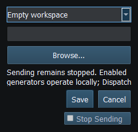

Figure 9. Category tabs, Sending controls, Property Editor and Object Tree in the main window. Click to enlarge.
The Default Layout is a starting snapshot, not a subscription or a global start command. The application uses the saved user Default when present and otherwise the bundled Default.
Loading a Layout revokes Sending. Enabled generators may still operate locally according to the document; this is separate from external instrument transmission. Representative values in a bundled Layout are not observations from your attached vessel.
Layout → Startup Workspace offers Empty workspace, Load a selected Layout or Apply a selected Template. Browse for a valid document, then Save; Cancel preserves the prior startup choice. The path must remain available on that computer. A missing or invalid startup document produces feedback and an empty workspace rather than silently authorizing output.
Startup never enables global Sending. It can restore locally enabled generators and their Dispatch configuration. On a shared bench, Empty workspace is a useful deliberate starting choice. Changing the Default and changing startup selection are different operations: choose each setting separately.

Figure 8. Startup Workspace chooses Empty, a Layout or a Template. Startup never authorizes Sending. Click to enlarge.
Figure 9. Category tabs, Sending controls, Property Editor and Object Tree in the main window. Click to enlarge.
Introduction · System Requirements · Installation and First Launch · Viewer vs Generate · Quick Start · Connection Troubleshooting · Enable, Dispatch and Sending · Route Overview · Engineering Units